Version 0.1.1 Dashboards over ClickHouse, PostgreSQL and MongoDB
Hune
Dashboards as JSON, one static binary and one HCL file.
The server builds every query from the saved document, so a viewer never sends SQL. It is for teams that keep their data in SQL and want a small, strict dashboard server.
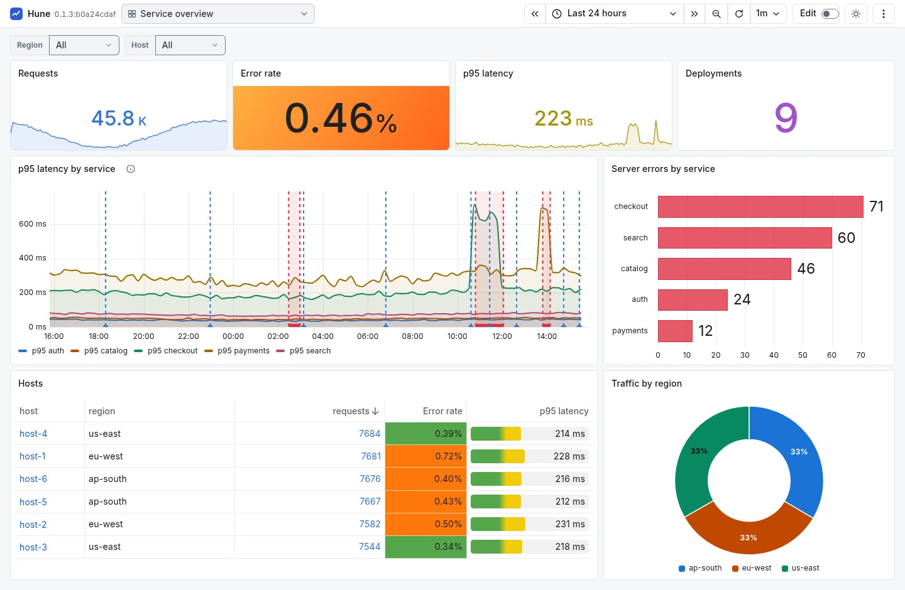
Dashboards that stay under control
Hune shows dashboards of SQL and document panels. It keeps the rules of the server in one place, and it keeps them strict.
Dashboards as documents
A dashboard is one JSON document with a closed schema. The server checks it, keeps its history and gives it a version tag.
SQL stays on the server
The server builds each query from the saved document. A viewer sends no SQL. Each source has limits, a time budget and a cancel.
Access with ProcurAuth
In the mode authzen, Hune checks an identity token and asks a PDP before each operation. A grant on a folder covers its dashboards.
How it works
Hune is one static binary. The page is inside. The query engine checks each text and asks the data source.
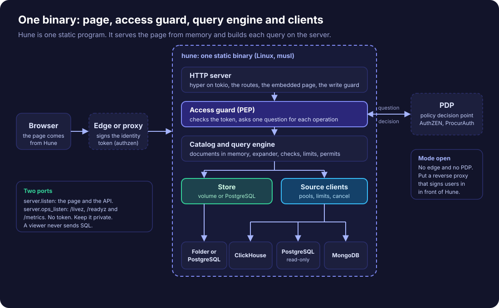
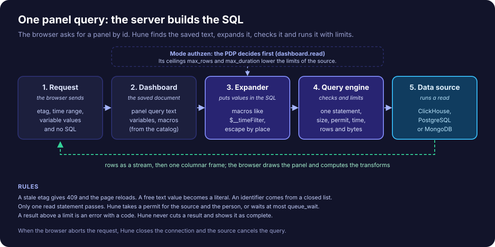
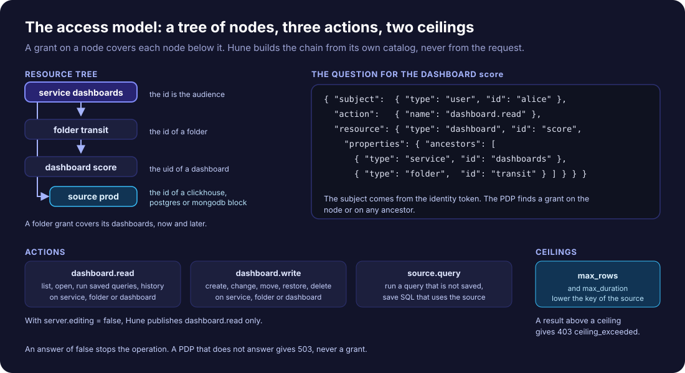
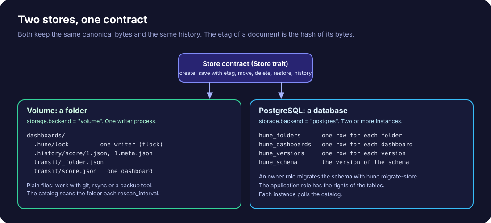
See it
Each picture comes from a live copy of the product, with synthetic demo data. Nothing is mocked.
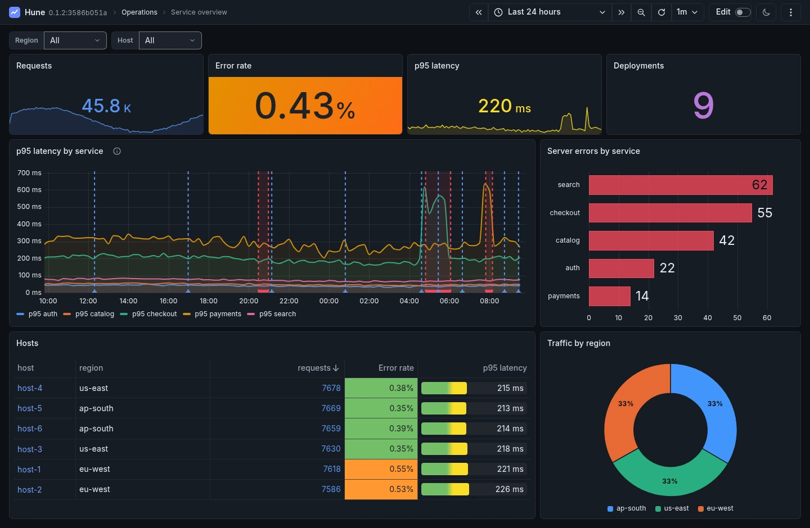
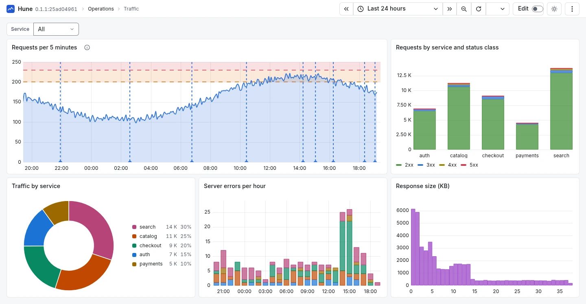
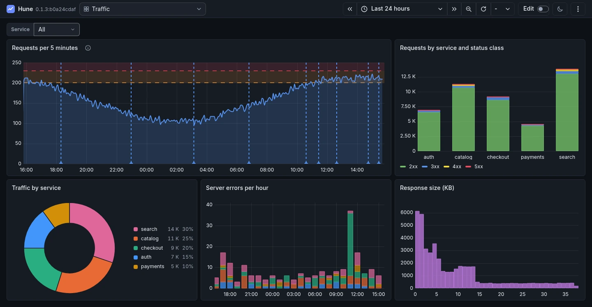
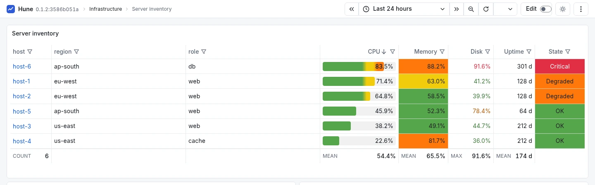
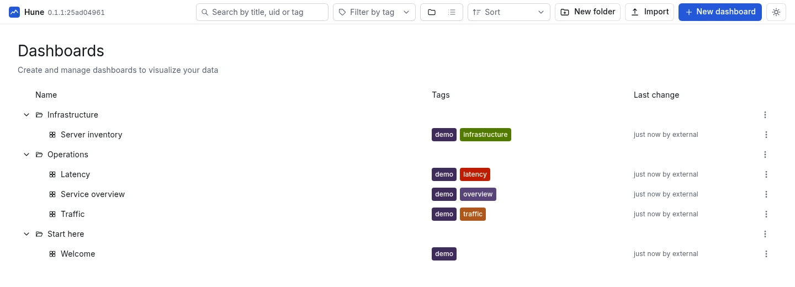
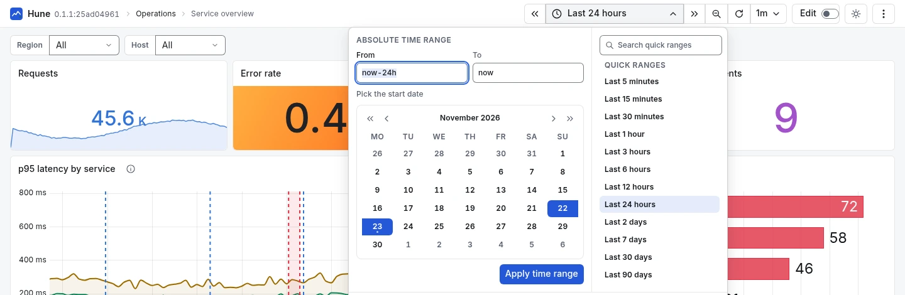
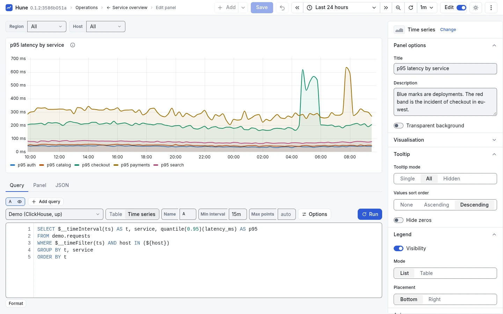
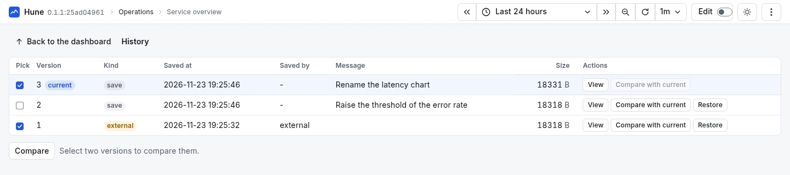
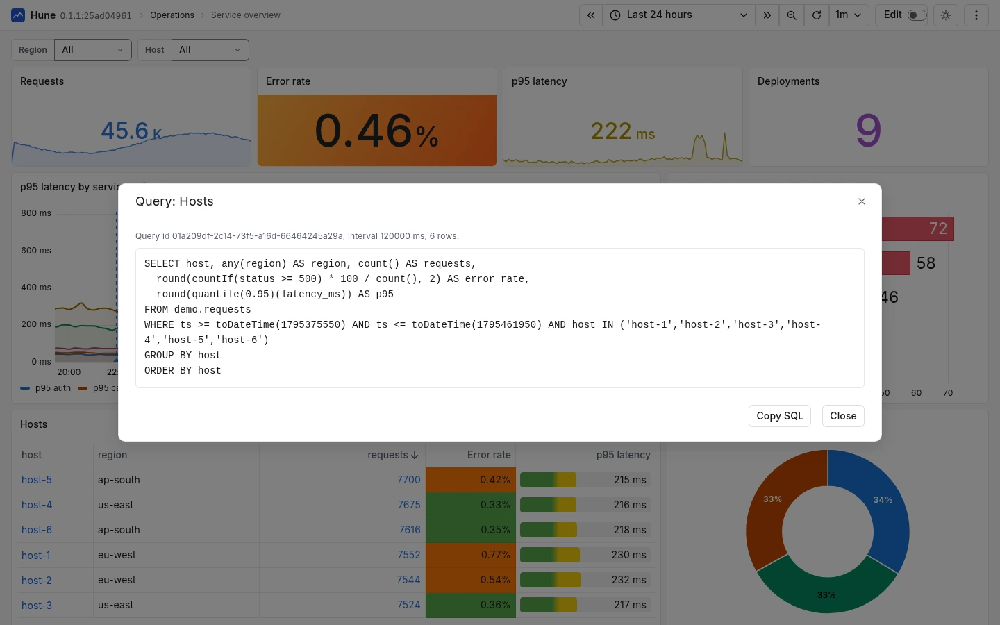
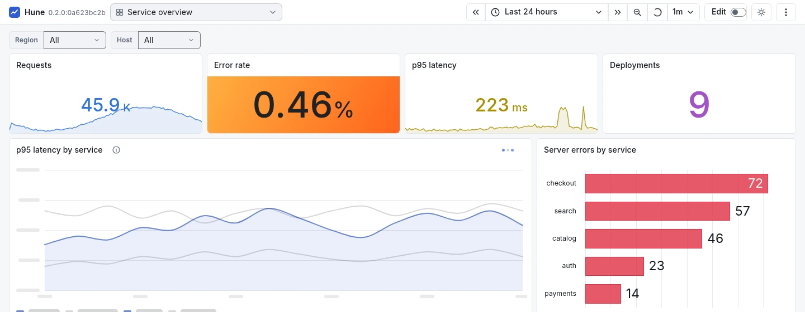
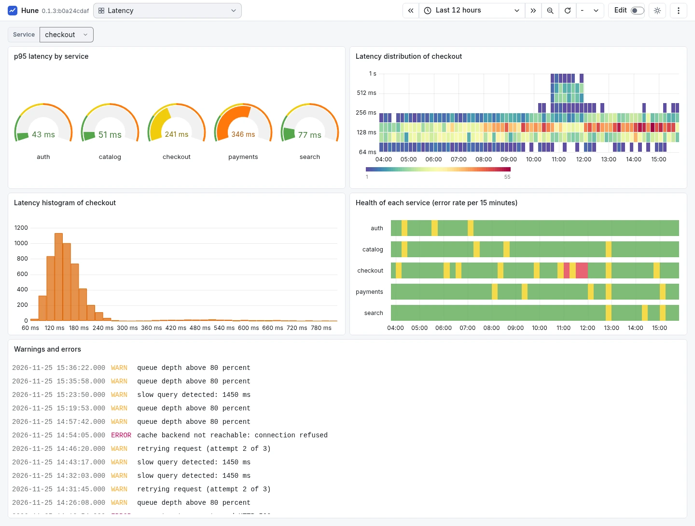
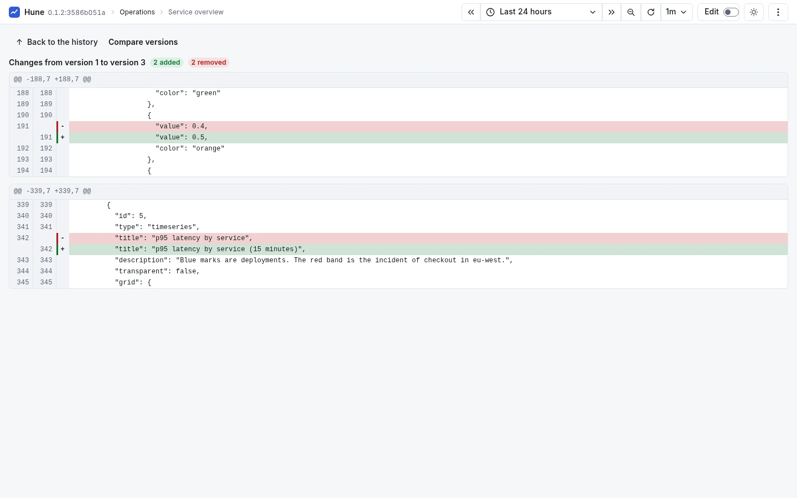
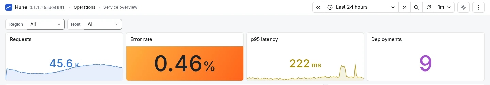
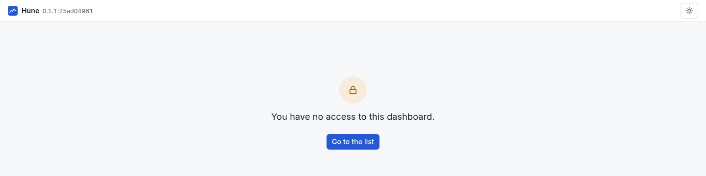
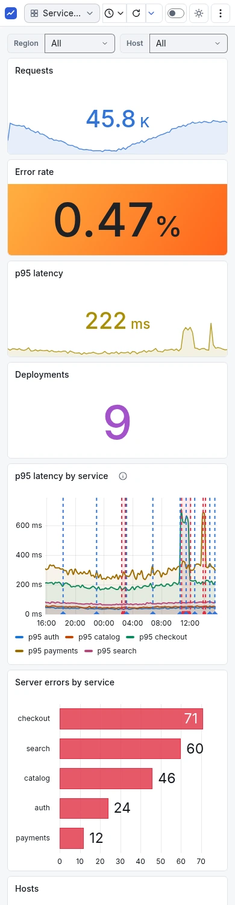
What Hune does
| Area | What Hune does |
|---|---|
| Data sources | ClickHouse, PostgreSQL and MongoDB. Each kind has a closed check of the query text, limits, a cancel and a probe. |
| Panels | Table, time series, stat, bar chart, pie chart, XY chart, bar gauge, gauge, text, state timeline, status history, heatmap, histogram, logs and map. |
| Variables | Query, custom, text box, interval, constant and ad hoc filters. A variable can repeat a panel or a row. |
| Editor | Forms for each panel type, a query editor with a syntax tree, a history of versions, a conflict screen and restore. |
| Stores | A folder of JSON files (a volume) or a PostgreSQL database. Commands move documents from one store to the other. |
| Grafana | The command import-grafana reads the dashboards of a Grafana export, with a report, an acceptance file and an nginx map. |
| Access | The mode authzen checks an identity token and asks a PDP. The mode open needs a proxy that signs users in. |
| Configuration | One HCL file with a closed schema. A mistake stops the start. The command print-config shows each value and its source. |
| Operation | Logs, metrics, audit lines, an OTLP exporter of traces and a second port for the operation routes. |
| Page | Plain JavaScript, HTML and CSS with no framework and no build step. A light theme and a dark theme. No request goes to another origin. |
Run it in five minutes
This test starts a local ClickHouse in Docker, on 127.0.0.1. The guide has each step, with the demo data.
docker run -d --rm --name hune-demo-ch -p 127.0.0.1:8123:8123 clickhouse/clickhouse-server:26.8.34.13
curl -fsSLO https://github.com/ProcurAuth/hune/releases/download/v0.1.1/hune_0.1.1_linux_amd64.tar.gz
tar -xzf hune_0.1.1_linux_amd64.tar.gz
cd hune_0.1.1_linux_amd64
./hune serve -c hune.hclThe ProcurAuth family
Hune is a program of the ProcurAuth organisation. The organisation holds the open specification and the programs that follow it. The implementations page lists them, with the results of the conformance runs.